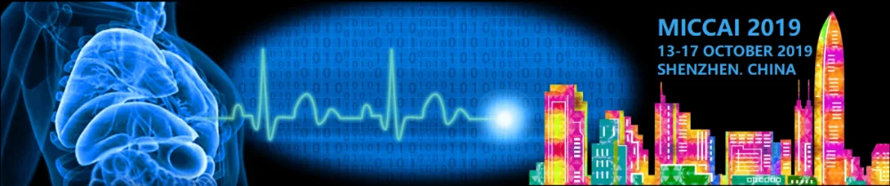
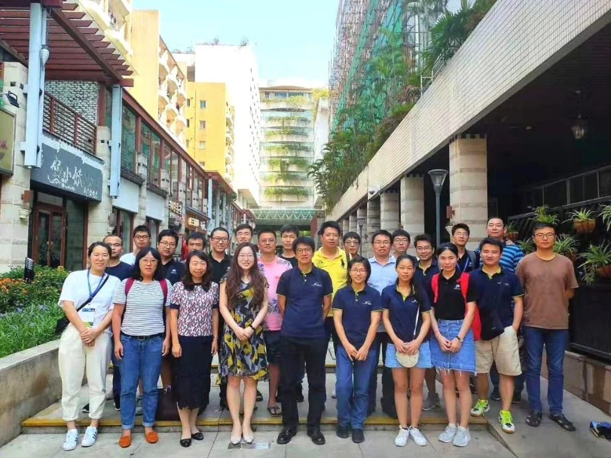
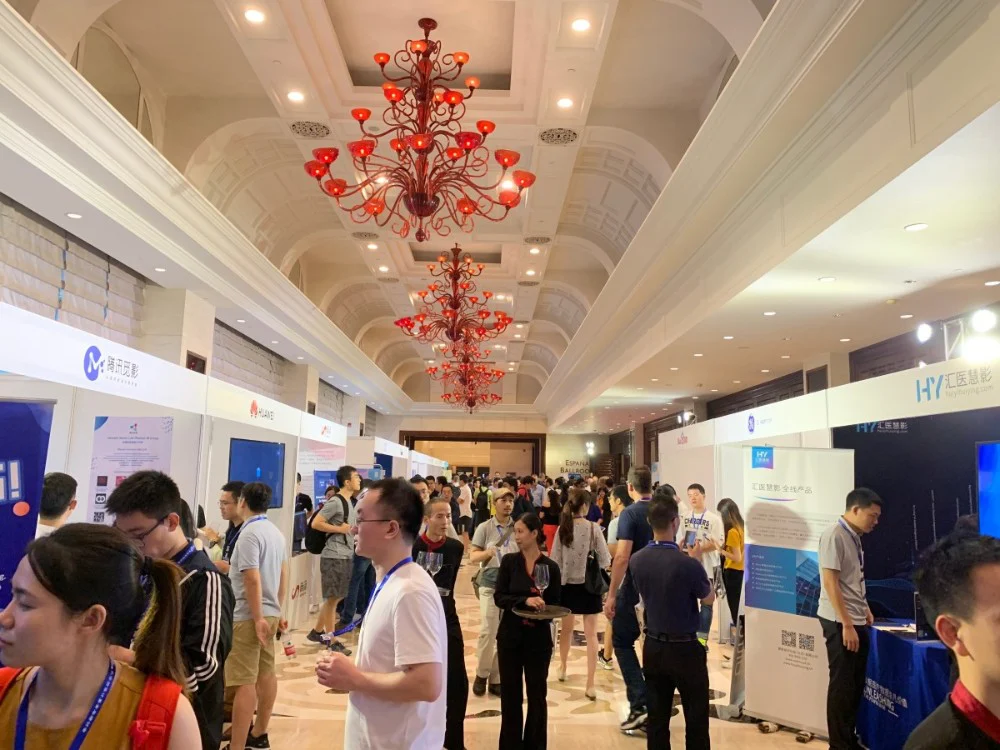
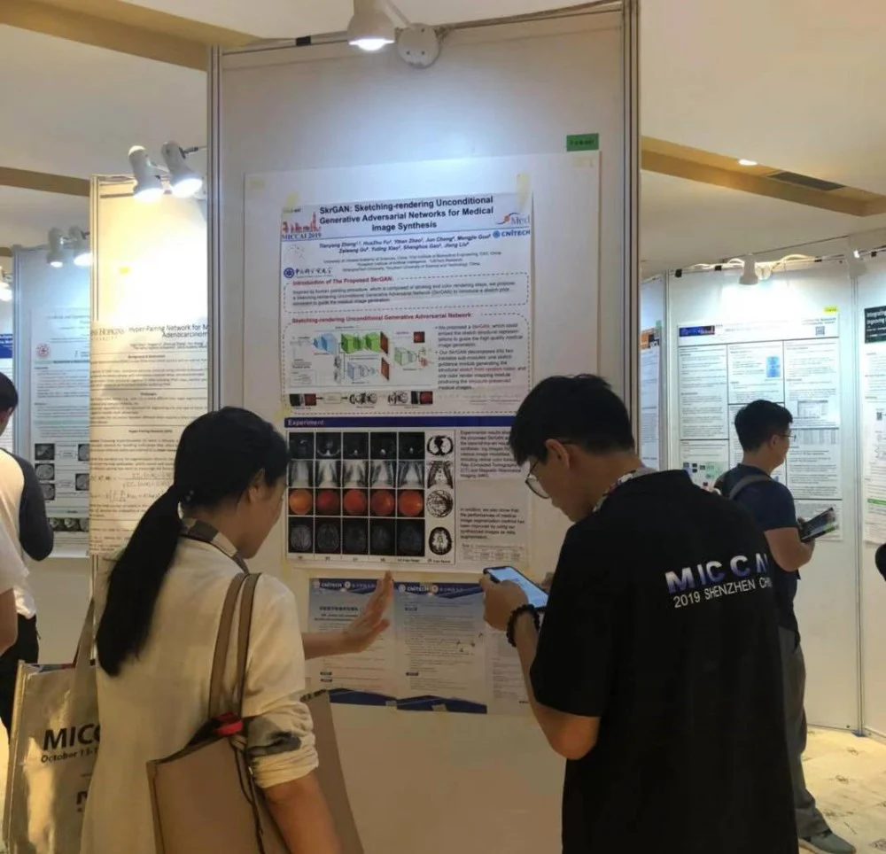
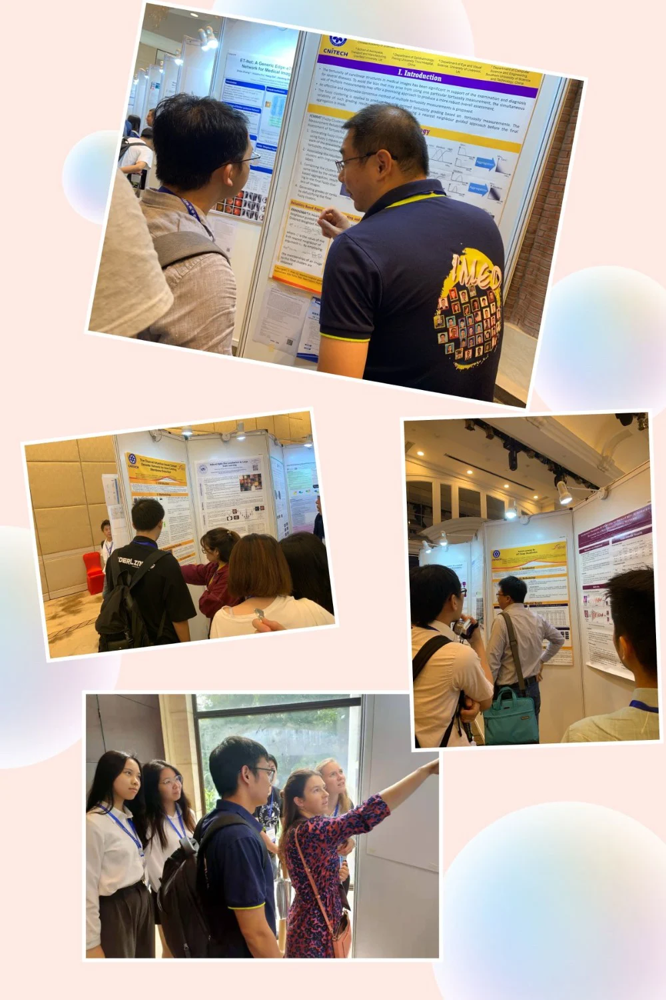
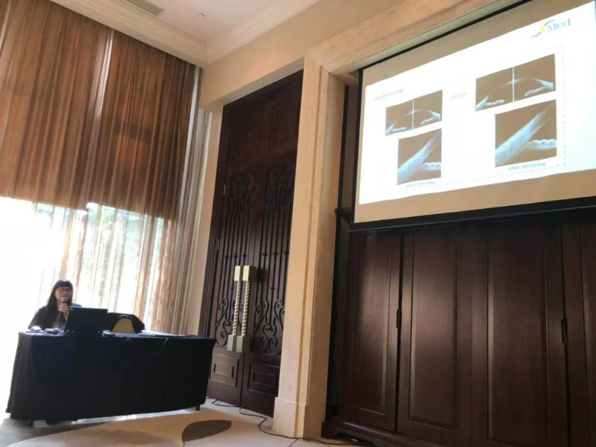
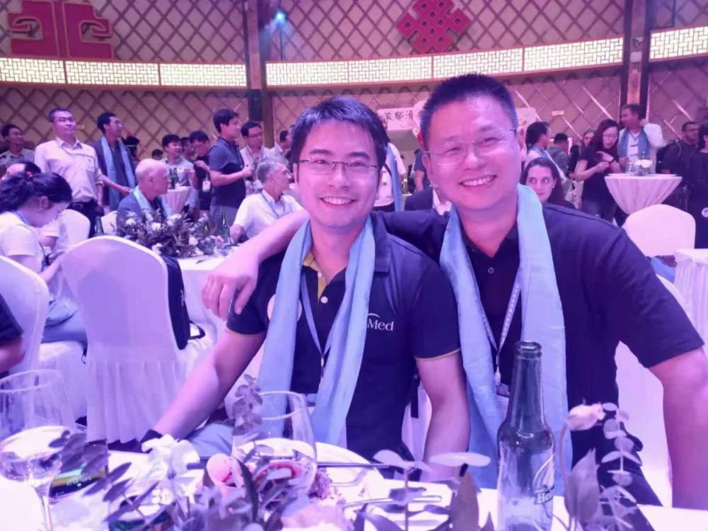

刚从祖国70周年⼤庆的激昂情绪⾛出，iMed便转身投⼊忙碌的⾏程——MICCAI 2019。
MICCAI 由国际医学图像计算和计算机辅助干预协会(Medical Image Computing and Computer Assisted Intervention Society) 举办，跨医学影像计算(MIC)和计算机辅助介入 (CAI) 两个领域的综合性学术会议，是该领域的顶级会议，吸引了全球134所顶级科研高校的研究团队共同参与，被认为有着非常强的国际影响力和⾮常高的学术权威性。iMed团队在以独特的眼科医疗图像研究范畴上，迎来了一波大丰收，共计5篇论⽂被MICCAI 正会录⽤。
iMED全球各地成员（iMED深圳，iMED宁波，iMED新加坡…）也趁此次机会，齐聚⼀堂，共同分享、交流、探讨未来规划。其中iMED总负责人刘江从去年的⼯作内容表现到现今取得的成果，进行了总结、归纳，指出团队科研工作还有哪些不⾜、团队制度哪些不够完善，并对未来科研之路，团队建设之策进⾏了总体规划。

iMED各地成员合影
10月14日，MICCAI会议成果展示正式开始，该会议吸引了众多海内外研究人员，会议⼤厅贴满了各型各样的论⽂展示海报，可谓“百报争鸣”。iMED海报前，吸引了许多志同道合的参会者。




10月15日晚，同样受欢迎的Gala Dinner也终于到来了。Gala Dinner不仅仅只是晚宴，更是研究者们在最放松情绪下的自由切磋与研讨。这一届独具中国特⾊色的Gala Dinner，赢得了无数的掌声与欢呼。积极参与，积极创造，造就更具活力的科研⼈才，建设更具力量的iMED

新的历程，新的起点,，稳扎稳打，再创辉煌，新的态势，新的成果，屹立世界！